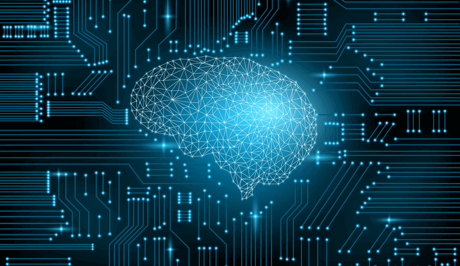

Every minute, seconds and years
Every day in our lives we use plastic devices that communicate throw very thin glass wires, without them we can't do anything. The biggest search engine in the world uses machine learning to show the best result to the user, why do you think Facebook and Twitter collect your data? because they want to show the things that they think you like so they can earn more money, this is a very simple usage of machine learning. We spend more than at least 30 minutes on TikTok or Instagram, these two platforms use the content that they think you like to get you to engage more on their platform.

Your sound, your hand!
Around 500 million people around the world use Siri and google voice, how do you think they recognize your voice and find the thing that you asked them? "hey Siri, how much is Machine Learning For Dummies?" This simple statement has millions of codes behind it, every syllable that you say gets sent to data centers of apple, and they get procced there with millions of other voices and with different pronunciations after it processes it will show you the result. In the backend, if machine learning was not available to us, it would have been impossible to find the correct search. Machine learning is used in different chatbots and voice assistants to help us find the things we want around the internet.

The Roads <0101001>
Imagine a day where you take your phone out of your pocket and request your car and just sit in the cat without touching a button you will arrive at your workplace. That is what machine learning can do to our lives. It makes tedious tasks much easier for us humans. With the command of your voice turn on your lamp or your pc. just give the address and you will be there much faster than now. There will be fewer polluted cities and most cars will be run on electricity because of how efficient they are because of machine learning. With machine learning transportation will be a matter of thought because just by thinking about it you will be on the plane to go from new york to new Zealand without a pilot, this means less money for the ticket.